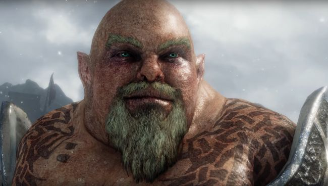

Middle-earth: Shadow of War's charity DLC will be free for everyone
Forthog Orcslayer was meant to raise funds for the family of a developer who died of cancer, but the plan led to confusion.

Monolith announced a plan last month to commemorate executive producer Mike Forgey, who died of cancer in 2016, in the upcoming Middle-earth: Shadow of War as a new character named Forthog Orcslayer. Forthog would be available for $5 as DLC, and funds raised prior to December 31, 2019, would go to Forgey's family. But there were complications.
The big issue was that, while Forthog would be available for purchase worldwide, Monolith said that funds going to his family would come only from sales in the US, excluding several states. Naturally, that led to questions about the fate of the rest of the money: Publisher WBIE issued a statement saying that neither it nor Monolith would profit from sales of the DLC, but questions about how exactly the funds would be handled persisted. It didn't look good.
So today, Monolith changed the plan entirely: The Forthog Orcslayer DLC will be free for everyone, and instead of raising funds, WBIE will make a donation to Forgey's family.
"Although we decided to donate all profits to the family, we only planned to actively promote this donation in the U.S. (excluding certain states based on their charitable promotion laws). We hoped this approach would raise as much money as possible for the Forgey family in compliance with the law," community admin GypsyWB explained.
"Our decision not to promote the donation outside the U.S. (even though we intended to donate the money) caused many to question where funds from other territories were going. Answering that direct question itself could have triggered compliance obligations or put us in violation of cause marketing laws in some of the 241 territories in which the content was available."
The situation was made worse by a "factually incorrect tweet" saying that funds raised by international sales of the DLC would not go to the Forgey family. "For absolute clarity; our intention was always to give all profits from the DLC, worldwide to the Forgey family," GypsyWB wrote.
"We now recognize that tying our donation to sales of the DLC was not the best way to achieve our goal of offering financial support to the family and creating a lasting memorial to Michael Forgey. We sincerely apologize to the fans and to the Forgey family for the confusion we created."
The amount of the donation that will be made to the family hasn't been disclosed, but anyone who wants to kick in some extra can do so at Forgey's YouCaring page. Everyone who's already purchased the DLC will be given a full refund.